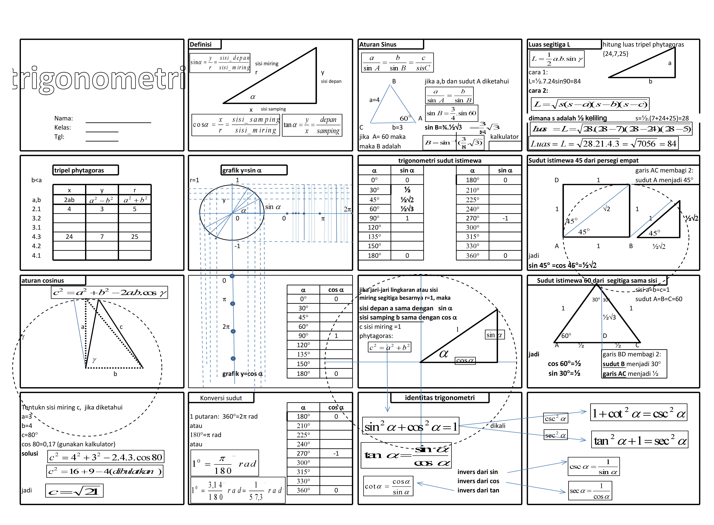

$b=\sqrt{a}$
Portal Peta Pikiran
Profesional Kolaboratif
Tentang Portal Peta Pikiran
B'PHY merupakan website yang berisi peta pikiran atau mindmap, yang dimulai dari matematika; berisi visual/gambar koneksi antar teori/dalil/azas/prinsip ataupun gagasan untuk menemukan solusi
Update 16/5/22

Bagaimana menggunakan situs ini?
1.Arahkan pointer ke gambar mindmap
2.Zoom dan geser kesalah satu materi yang dikehendaki
3.Klik caption vidio sesuai dengan materi
4.Sambil mendengar audio/vidio ... geser-geser gambar sesuai dengan narasi
5.Pahami materi lalu kerjakan soalnya...ok, broo.
6.Disarankan menggunakan laptop/PC, karena belum responsif pada handphone
Produk
|  |
Apa itu MINDMAP
MINDMAP adalah sebuah gambar yang secara visual merupakan sebuah pokok pikiran / tema yang dirinci untuk memahmi konsepnya. Rinciannya berupa garis penghubung/koneksi dari satu pikiran ke yang lainnya secara lebih detail. Inter koneksi tersebut menggambarkan suatu sistem pimikiran. Tujuan mindmap adalah memahami materi secara keseluruhan.